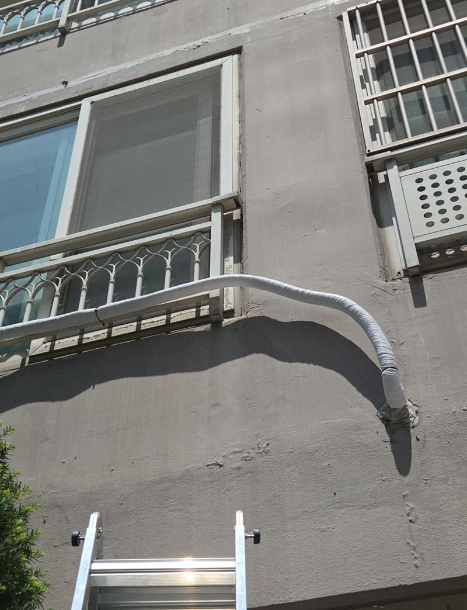
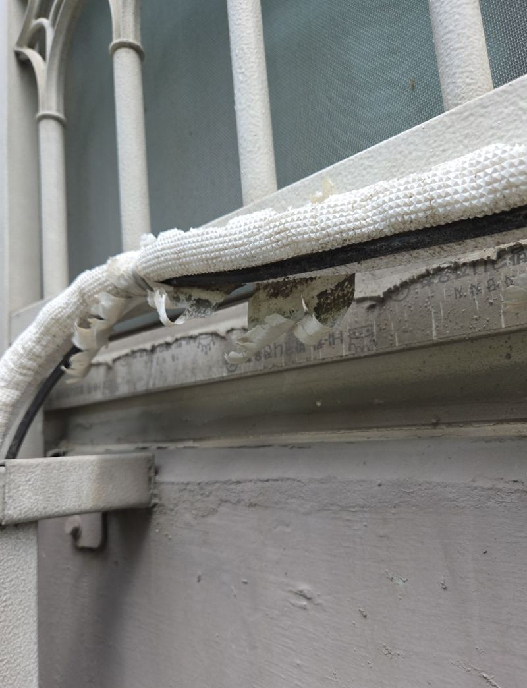
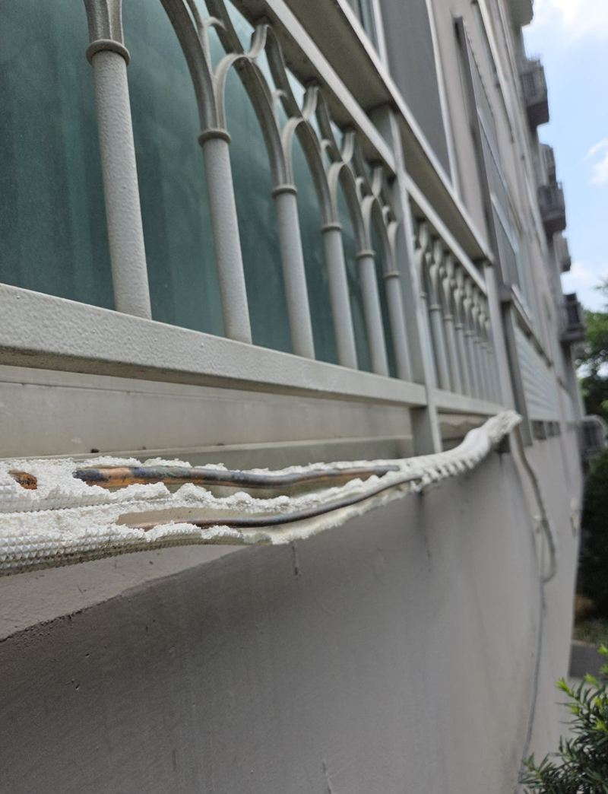
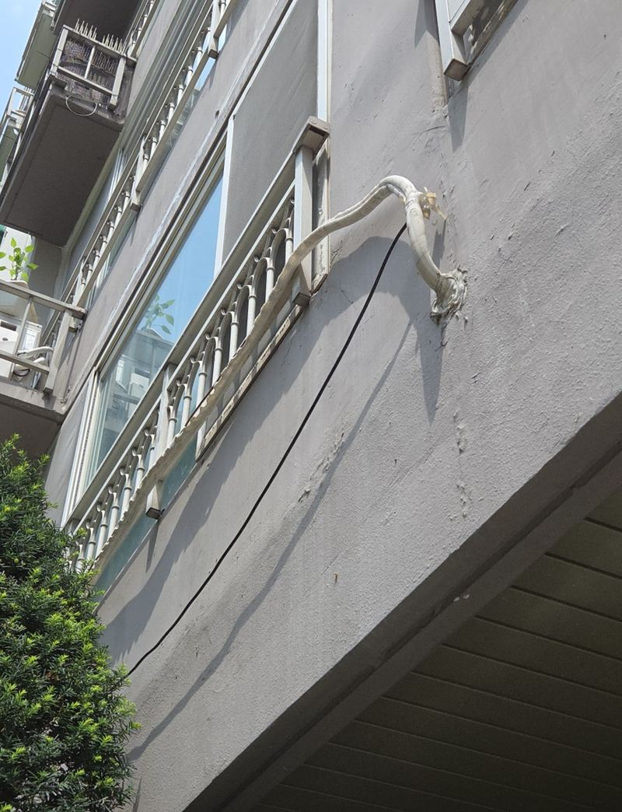
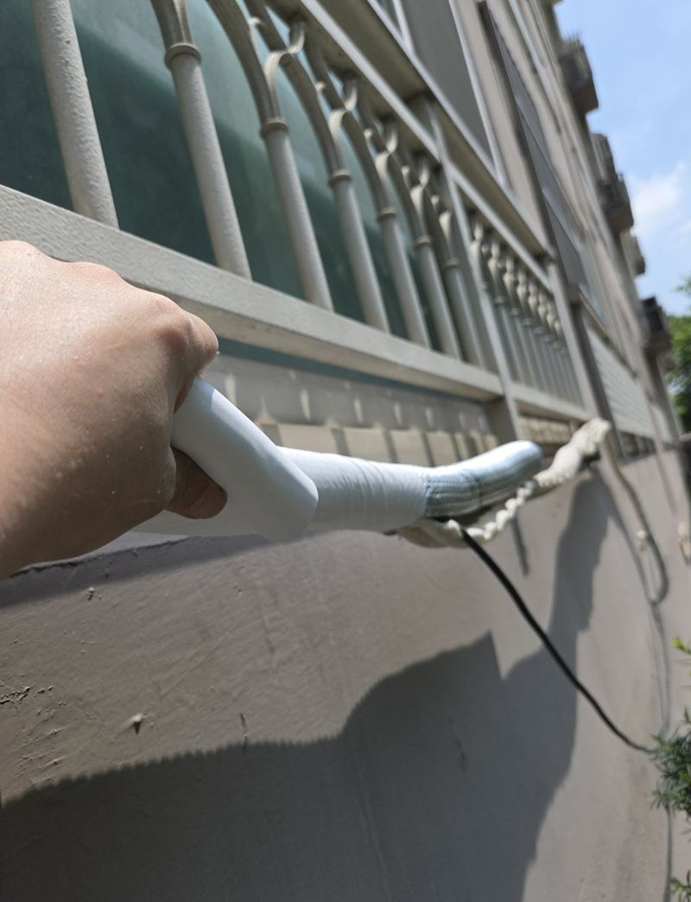
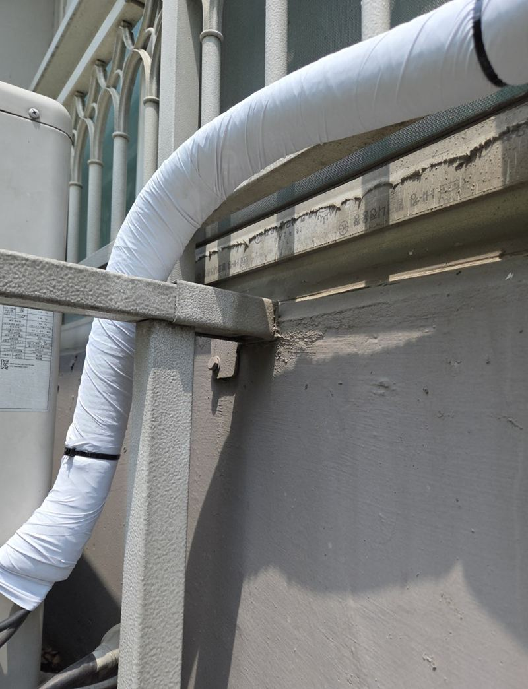
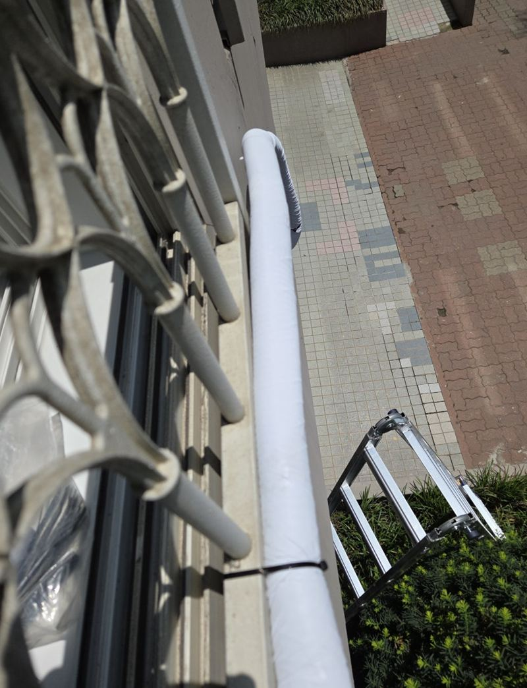

부천 에어컨 실외기 보온재 훼손 테이핑 교체

 교체 전교체 후
교체 전교체 후← 밀어서 전후 비교 →
아파트 외벽을 따라 실외기로 내려가는 배관이 몇 해 햇빛과 비를 맞으며 보온재가 갈라지고, 마감 테이프가 풀려 펄럭이고 있었어요. 군데군데 배관이 그대로 드러나 있었고요. 낡은 보온재를 걷고 새로 감은 뒤, 굽은 곳과 연결부까지 테이프로 촘촘히 마감하고 처지지 않게 고정했어요.
| 현장 | 부천 원미구 상동 아파트 외벽 실외기 배관 |
|---|---|
| 상태 | 보온재 갈라짐·탈락, 테이프 풀림, 배관 노출 |
| 한 일 | 손상 범위 확인 → 낡은 보온재·테이프 제거 → 새 보온재 → 곡선·연결부 테이핑 → 고정 보강 |
| 포인트 | 일부만 상한 것처럼 보여도 전체 상태 확인 |
보온재가 찢어지면 생기는 일
실외기 배관 보온재는 배관 온도를 지키고 바깥 환경에서 배관을 보호해요. 찢어진 채로 두면 자외선과 비를 그대로 맞아 남은 보온재도 빨리 삭고, 테이프 틈으로 물이 들어가 안쪽까지 젖어요. 겉으로는 한 군데만 상한 것 같아도, 외벽 배관은 바람에 흔들리며 테이프가 벌어지는 일이 많아 전체를 봐야 해요.


새 보온재와 테이핑
삭은 보온재와 낡은 테이프를 걷어 내고 배관 상태를 확인했어요. 새 보온재를 감은 뒤, 아래에서 위로 겹쳐 가며 테이프를 감아 빗물이 겹친 틈으로 들어가지 않게 했어요. 굽은 구간과 연결부는 테이프가 가장 먼저 벌어지는 곳이라 한 번 더 감아 마감했어요.



처지지 않게 고정 보강
외벽에 늘어진 배관은 무게 때문에 시간이 지나면 아래로 처져요. 처지면 테이프가 당겨져 다시 벌어지기 쉬워서, 고정 지점을 보강해 배관이 벽을 따라 반듯하게 붙어 있도록 정리했어요.

이럴 때 실외기 배관을 손보세요
- 보온재가 하얗게 부스러져요햇빛에 삭은 거예요. 만지면 가루가 묻어나면 교체할 때예요.
- 테이프 끝이 바람에 날려요틈으로 비가 들어가 안쪽 보온재까지 젖어요.
- 배관 금속이 드러나 보여요보호 기능이 사라진 상태예요.
- 배관이 아래로 처져 있어요고정이 풀렸거나 무게를 못 버티는 거예요.
보온재 교체 전에 알아 두면 좋아요
- 배관 길이실외기까지 노출된 길이를 대략 알려주시면 자재를 맞춰 와요.
- 실외기 위치베란다 안인지 외벽 거치대인지에 따라 작업 방법이 달라요.
- 배관 커버 여부커버를 씌우면 보온재 수명이 길어져요.
- 다른 세대 상황같은 동이면 함께 진행하기도 해요.
실외기 배관 보온 질문
에어컨이 안 시원한 것도 고쳐지나요?
보온 상태가 나쁘면 효율에 영향을 줄 수 있지만, 냉방 고장은 에어컨 업체 점검이 필요해요. 저희는 배관 보온과 정리를 맡아요.
높은 층 외벽 배관도 하나요?
작업 위치와 접근 방법을 보고 정해요. 실외기 위치 사진을 보내 주세요.
몇 년마다 다시 해야 하나요?
햇빛을 많이 받는 방향일수록 빨리 삭아요. 갈라짐이 보이기 시작하면 손보세요.
배관 덮개(커버)로 덮을 수도 있나요?
커버를 씌우면 보기도 깔끔하고 보온재 수명도 늘어요. 원하시면 함께 상의해요.
여러 세대를 한 번에 맡길 수 있나요?
관리사무소에서 단지 단위로 의뢰하시는 경우도 있어요.
작업할 때 에어컨을 꺼야 하나요?
안전하게 작업하려고 잠시 꺼 두시길 권해요.
보온재 색을 고를 수 있나요?
흰색·회색 등 외벽에 어울리는 색으로 골라요.
보온재만 사서 직접 감아도 되나요?
낮은 층 베란다라면 가능하지만, 외벽 높은 곳은 추락 위험이 있어 맡기시는 게 안전해요.
테이프가 다시 풀리지 않게 하려면요?
아래에서 위로 겹쳐 감고 끝을 단단히 눌러 붙이는 게 중요해요.
다른 실외기·배관 보온 현장
실외기 배관 전체와 상한 부분을 찍어 보내 주세요.
전화 상담 010-4517-9872